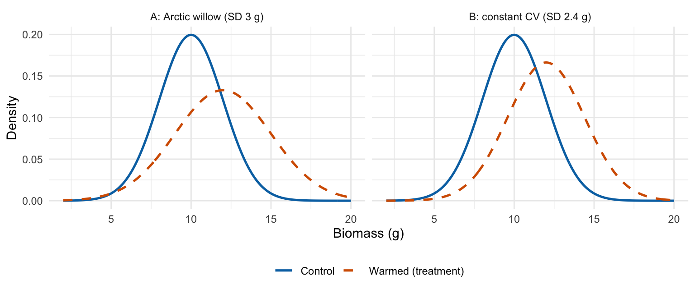

escalc(measure = "VR",
sd1i = 3, n1i = 20,
sd2i = 2, n2i = 20,
vtype = "LS2")
yi vi
1 0.4055 0.0554 Beyond the mean
The most commonly used effect sizes concern mean relationships between variables.
However, variability is itself a meaningful dimension of reality, not merely noise (Nakagawa et al. 2026). In ecological contexts, heterogeneity is considered a key driver of biodiversity and ecosystem functioning (Stein et al. 2014, Levine et al. 2016). Likewise, in evolution, variability tells us important information about selective pressures which can either increase variation (Buckley and Huey 2016, O’Dea et al. 2016) or reduce it (Crispo 2007).
There are two main effect sizes for calculating variability between two groups (i.e., discrete predictors): lnVR and lnCVR (Nakagawa et al. 2015).
Throughout this page we use the Arctic willow warming example from 2.1: Salix arctica aboveground biomass in an ambient control (10 g, SD 2 g) and a warming treatment (12 g, SD 3 g), with 20 plants per group. For this example, lnVR = 0.405, lnRoM = 0.182, and Hedges’ g = 0.77.
lnVR is the log-transformed ratio of the standard deviations of two groups:
\[ \mathrm{lnVR}=\ln\left(\frac{sd_1}{sd_2}\right), \tag{1}\]
where \(sd_1\) is the treatment-group standard deviation and \(sd_2\) is the control-group standard deviation. If group 1 is your treatment or experimental group:
\(\mathrm{lnVR}>0\): the treatment group is more variable than the control group;
\(\mathrm{lnVR}=0\): the groups have equal standard deviations;
\(\mathrm{lnVR}<0\): the treatment group is less variable.
For the willow example, \(\mathrm{lnVR} = \ln(3/2) = 0.405\).
lnVR can be back transformed to plain English by exponentiating (i.e., \(e^{lnVR}\)).
If we have an lnVR of 0.4: \(e^{0.4}\approx1.5\). This indicates that the standard deviation of the treatment group is approximately 50% higher than the control group.
Combining an lnRoM or SMD meta-analysis of mean differences with an lnVR meta-analysis can provide a fuller description of biological change.
To calculate lnVR, use measure="VR" in escalc or eff_size in metatools. The tabs below show both:
escalc(measure = "VR",
sd1i = 3, n1i = 20,
sd2i = 2, n2i = 20,
vtype = "LS2")
yi vi
1 0.4055 0.0554 eff_size(sd1 = 3, n1 = 20,
sd2 = 2, n2 = 20,
effect_type = "lnVR",
verbose = FALSE) yi vi
<num> <num>
1: 0.4054651 0.05540166metatools uses the second-order variance by default, which metafor gives with vtype = "LS2". The table compares the two packages.
| package | yi | vi |
|---|---|---|
| metafor | 0.4055 | 0.0554 |
| metatools | 0.4055 | 0.0554 |
Note that escalc applies a small-sample bias correction to lnVR by default. If you want the simple formula shown above, set correct = FALSE.
There is a paired version of lnVR as well, which requires an estimate of the correlation between group 1 and 2, which we can specify as 0.5 or 0.8 if it’s unreported (which is typical, see here). Use this formula if groups 1 and 2 are paired, e.g., from paired plots, before-after experiments, and so on.
In escalc this is specified with the “VRC” measure:
escalc(measure = "VRC",
sd1i = 1.5, sd2i = 2.5,
ni = 15, ri = 0.5)Senior et al. (2026) recently demonstrated that using bivariate models with lnRoM and lnVR as response variables can increase statistical power to detect effects of treatments on both variation and mean responses. This is an interesting and little implemented method to incorporate both mean differences and variability into a single meta-analytic model.
lnCVR is the log-transformed coefficient of variation ratio. Its definition formula (prior to small sample bias correction) is:
\[ \begin{aligned} lnCVR=\ln\left(\frac{sd_1/m_1}{sd_2/m_2}\right) \end{aligned} \tag{2}\]
This effect size is standardized by the mean. As such, this effect size cannot accept negative mean values, requiring positive, ratio-scale data like the lnRoM effect size. (Note that standard deviations can never be negative so lnVR is always calculable as long as standard deviations were reported, even if means are <0).
Importantly, lnCVR describes both mean differences between groups and differences in variability and has an exact mathematical relationship with lnVR and lnRoM:
\[ lnCVR = lnVR - lnRoM \tag{3}\]
For the willow example, \(\mathrm{lnVR} - \mathrm{lnRoM} = 0.405 - 0.182 = 0.223\), which is the lnCVR we get directly from the formula (0.223). We can check this with escalc using the warming means and SDs (m = 12 and 10 g, sd = 3 and 2 g, n = 20 per group):
escalc(measure = "CVR",
m1i = 12, m2i = 10,
sd1i = 3, sd2i = 2,
n1i = 20, n2i = 20, correct = FALSE)
yi vi
1 0.2231 0.0578 Both packages return the bias-corrected lnCVR by default, and metafor gives the same second-order variance as metatools with vtype = "LS2".
escalc(measure = "CVR",
m1i = 12, m2i = 10,
sd1i = 3, sd2i = 2,
n1i = 20, n2i = 20,
vtype = "LS2")
yi vi
1 0.2226 0.0605 eff_size(x1 = 12, sd1 = 3, n1 = 20,
x2 = 10, sd2 = 2, n2 = 20,
effect_type = "lnCVR",
verbose = FALSE) yi vi
<num> <num>
1: 0.2225811 0.06053354The table compares the two packages.
| package | yi | vi |
|---|---|---|
| metafor | 0.2226 | 0.0605 |
| metatools | 0.2226 | 0.0605 |
Because lnCVR is defined by both lnVR and lnRoM, analyze lnVR alongside lnRoM (or SMD). Together, they describe both differences in variability and differences in mean relationships. For when to add lnCVR, see the discussion below.
lnCVR is intended to account for a common biological pattern: groups with larger means often also have larger variances. However, dividing by the mean makes an implicit scaling assumption. In simple terms, it works most naturally when the standard deviation increases roughly in proportion to the mean. Equivalently, variance then increases roughly with the square of the mean.
That relationship differs among data types:
Approximately normal data with constant variance: the standard deviation may stay similar as the mean changes. The coefficient of variation will then change mechanically with the mean.
Poisson count data: variance equals the mean, so standard deviation increases with the square root of the mean rather than directly with the mean. The coefficient of variation therefore decreases as the mean increases.
Negative-binomial count data: variance can increase much faster than the mean. At large means, the standard deviation may be close to proportional to the mean, but the relationship depends on the dispersion parameter.
Proportions and other bounded responses: variance is constrained by the mean and commonly shrinks near the boundaries. The mean–variance relationship can therefore be strong and nonlinear.
For these reasons, do not choose lnCVR automatically. First plot or model the relationship between group means and standard deviations across the dataset. In all cases, analyze lnVR alongside lnRoM (or SMD). lnCVR is a sensitivity analysis: add it when relative variability is the question, and only if its assumed mean–variance scaling is plausible. If the results are different, these comparisons can help you understand why.
Fig. 1 shows two cases. In panel A (our willow example), the warmed plants’ SD grew more than their mean did: the SD went up 50% (2 g to 3 g), but the mean only went up 20% (10 g to 12 g). So both lnVR and lnCVR are above zero. In panel B, the SD grows by exactly the same proportion as the mean (2 g to 2.4 g, also 20%). So lnCVR is zero, while lnVR equals lnRoM.
cols <- c("Control" = "#0072B2", "Warmed (treatment)" = "#D55E00")
xs <- seq(2, 20, length.out = 400)
dens_df <- function(m_c, sd_c, m_t, sd_t, panel) {
rbind(
data.frame(x = xs, y = dnorm(xs, m_c, sd_c), group = "Control", panel = panel),
data.frame(x = xs, y = dnorm(xs, m_t, sd_t), group = "Warmed (treatment)", panel = panel)
)
}
dd <- rbind(
dens_df(ctrl_m, ctrl_sd, warm_m, warm_sd, "A: Arctic willow (SD 3 g)"),
dens_df(ctrl_m, ctrl_sd, warm_m, warm_sd_cv, "B: constant CV (SD 2.4 g)")
)
ggplot(dd, aes(x = x, y = y, colour = group, linetype = group)) +
geom_line(linewidth = 0.9) +
facet_wrap(~panel) +
scale_colour_manual(values = cols) +
scale_linetype_manual(values = c("Control" = "solid", "Warmed (treatment)" = "dashed")) +
labs(x = "Biomass (g)", y = "Density", colour = NULL, linetype = NULL) +
theme_minimal(base_size = 11) +
theme(legend.position = "bottom")
This can be calculated in escalc with measure = "CVR". This effect size requires the same statistical ingredients as SMD and lnRoM:
escalc(measure = "CVR",
m1i = 12, m2i = 10,
sd1i = 3, sd2i = 2,
n1i = 20, n2i = 20)There is a paired version of lnCVR as well. In escalc this is specified with measure="CVRC".
escalc(measure = "CVRC",
m1i = 12, m2i = 10,
sd1i = 3, sd2i = 2,
ni = 20, ri = 0.5)Next: Differences in magnitude.